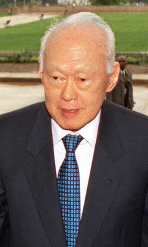
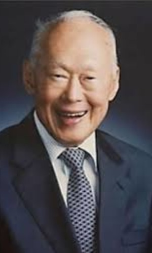

 
Лі Куан Ю народився 16 вересня 1923.Cінгапурський державний діяч, перший прем'єр-міністр Республіки Сінгапур, один з творців сінгапурського «економічного дива», був при владі близько тридцяти років.
На той час коли він вирішив передати владу,
щоб забезпечити стабільність та оновлення кадрів, він уже був прем'єр-міністром, що найдовше перебував при владі.
Співзасновник та перший генеральний секретар Партії народної дії (ПНР), він привів свою партію до восьми перемог з 1959 по
1990 рік, був учасником відокремлення Сінгапуру від Малайзії в 1965 році та його подальшого перетворення з відносно нерозвиненої колонії без природніх ресурсів на Азійського тигра, державу «Першого світу».
До останнього залишався однією
з найвпливовіших політичних фігур Південно-Східної Азії.
Помер у віці 92 років, на його похорони прийшло більше мільйона людей.
Закон природного відбору, як один з основоположних законів ринку, став базою для виховання громадян Сінгапуру. Концепцію виховання розробив прем'єр-міністр Сінгапуру Лі Куан Ю в 1984 році. Основа концепції - позитивна евгеніка, тобто не виключення
негідних, а сприяння відтворенню людей з цінними для суспільства ознаками. Країна стала підтримувати тих, у кого був хороший фізичний розвиток, високий інтелект і відсутність наслідкових захворювань.
Конкретно: коли сингапурські вчені-соціологи
зауважили, що багато високоосвічених жінок не виходять заміж і не народжують дітей, а більшість чоловіків одружються на бідних неосвічених малайках та індіанках, Лі Куан Ю вирішив створити потужну базу для створення нормальних сімей, здатних
ростити і виховувати здорових і розумних дітей. Під патронатом уряду було створено два шлюбних агентства. Одне займається освіченими молодими людьми, інше - рештою. Головна задача шлюбного агенства - укладення шлюбів між парами відповідного
соціального та інтелектуального рівня. Тут не просто підбирають пару молодій людині з урахуванням всіх особистісних особливостей, але і створюють умови для зустрічей, в тому числі і тет-а-тет. При агентствах функціонує мережа спортивних тренажерних
залів, кафе, басейнів, дискотек та кінотеатрів. Після укладення шлюбу молодятам від держави "світить" солідний подарунок у вигляді кредиту на придбання житла.
З іншого боку, наркоманкам та неграмотним жінкам пропонується стерилізація,
але повністю добровільна, в обмін на велику суму грошей. Недипломовані жінки, за народження другої дитини платять штраф. Однак, якщо після народження двох дітей така жінка піде на стерилізацію, вона за це отримує цілком якісне житло.
В Сінгапурі більшість демографічних проблем намагаються вирішити не покараннями, а допомогами та сприянням: чоловіки, які беруть заміж дипломованих жінок, отримують від держави пристойну грошову винагороду. Аналогічне і дуже значне заохочення
чекає і жінку з дипломом про освіту, якщо вона породжує більше трьох дітей.
Всі малюки, які народжуються в Сінгапурі отримують однакові стартові умови. Дитсадки і початкові школи не розділяються на елітні та неелітні, але раз на рік для всіх 11-12-річних дітей проводиться глобальне тестування на IQ. Для обдарованих дітей
будуються спеціальні школи, для високоосвічених людей організовуються безкоштовні круїзи, кращі з кращих потрапляють в елітні навчальні заклади.У всіх школах і дитсадках дуже прискіпливо стежать за фізичним і моральним розвитком дітей. Їх
змалечку привчають до спорту, праці, дисципліни. А ще, до культури поведінки.
Сінгапурські діти більше часу проводять у дитсадках та школах, ніж вдома. При всіх дитячих установах діє розгалужена мережа гуртків, секцій, клубів за інтересами,
тому сінгапурські діти практично не дивляться телевізор і завжди займаються чимось корисним. Після закінчення школи молодь зазвичай поступає в свої або закордонні вузи, найчастіше вибирають технічну освіту або школи бізнесу. Їх голови зайняті
виключно навчанням і кар’єрою. Питання створення сім'ї їх не хвилюють, оскільки після закінчення вузів, цим займеться шлюбне агентство. Крім того, їх не хвилює питання працевлаштування: за кожною розумною дитиною з малого віку спостерігають
великі корпорації, щоб потім запросити до себе на роботу.
В Сінгапурі той, хто забув злити унітаз, платить 180$ штрафу. Штраф за викинутий папірець складе суму, еквівалентну 1000 дол. США. Аналогічний штраф чекає того, хто вирішив плювати на вулиці, курити в громадських місцях, підливати квіти, залишаючи воду на блюдцях під горшками (приваблює комарів), паркуватись в центрі міста. Після 6 години вечора заборонено їздити власним автомобілем самому, обов’язково підвозити попутників або колег з роботи, оскільки це зменшує ризик виникнення заторів. Чоловіки незалежно від погоди повинні ходити в штанах, а жінки зобов’язані носити панчохи. Якщо водій перевищує ліміт у 80км/год, його оглушає сирена, якою повинна бути обладнана кожна машина в Сінгапурі, якщо собака гавкає вночі, їй видаляють голосові зв’язки.
| Action | Fine |
| Drunk and disorderly conduct | $3300 |
| Drinking in public places | $650 |
| Spitting | $1000 |
| Connecting to another user's Wi-Fi | $10000 |
| Forgetting to flush the toilet | $180 |
| Feeding pigeons | $500 |
| Littering | $1000 |
| Drug possesion | $20000 |
Так, в Сінгапурі немає демократії. Однак, результат роботи такої комплексної системи виховання, що враховує безліч факторів не затримується. Країна за темпами розвитку - одна з передових у світі. Постійний наплив молодих інноваційних людей у промисловість
і бізнес гарантує подальше процвітання.
Kоли директора шлюбного агентства Сюзан Шан запитували: "Не надто сильно держава втручається в особисте життя молодих сінгапурців?", вона відповіла: "Уряд витрачає астрономічні суми на освіту. Зрозуміло, що в обмін на це він хоче отримати
потомство, яке забезпечить благополуччя островів."
"Надлишок демократії веде до недисциплінованості та безладдя, які несумісні з розвитком."
Лі Куан Ю
Для детальнішої інформації - ENCYCLOPÆDIA BRITANNICA - Lee Kuan Yew
У нас до Вас є декілька запитань.